Abstract Games
These are some abstract games programmed in javascript for solo
play.
Cups
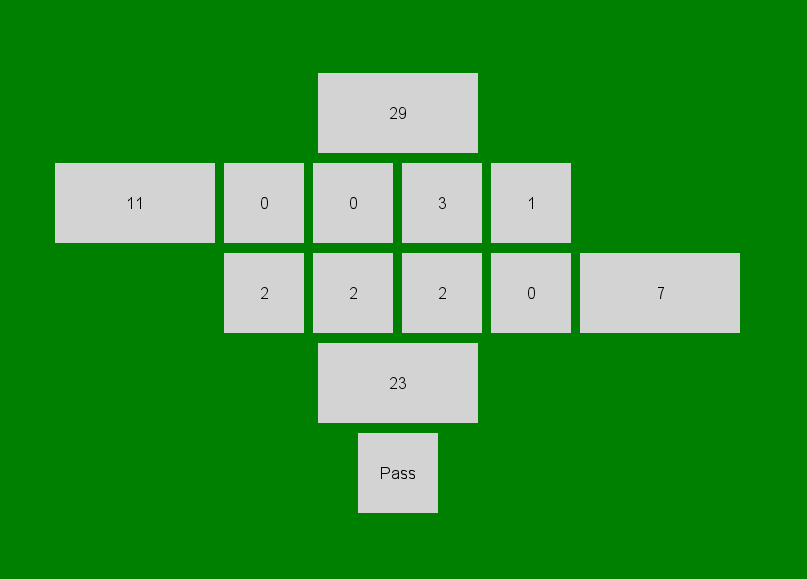
A modern mancala variant from "A Gamut of Games" (henceforth AGoG).
Mate
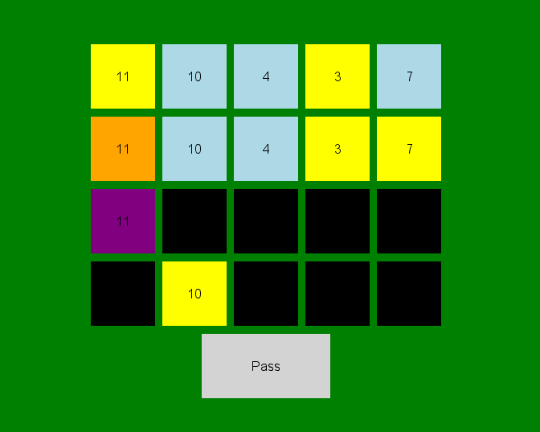
A game of perfect information played with cards (AGoG).
3 Musketeers

Another small but amusing game from AGoG.
Gin

Gin rummy. Cards are kind of abstract, right?
VennDoku
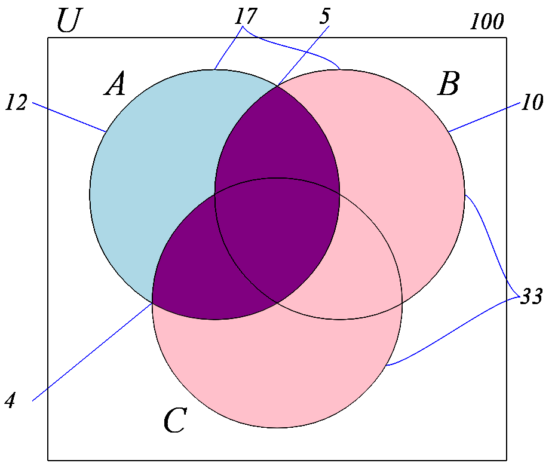
Venn diagram deduction game.
Tic-Tac-Toe
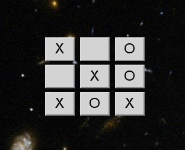
Everybody's first abstract game.
Terni Lapilli
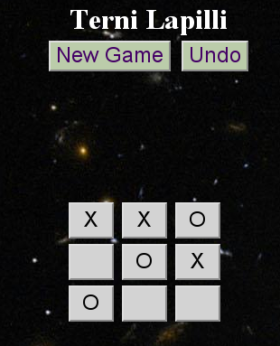
The ancient Roman form of
tic-tac-toe - a little bit better than the modern variety.
Invaderz
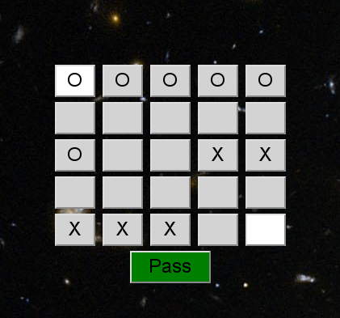
A variant on Hasami Shogi.
Oust
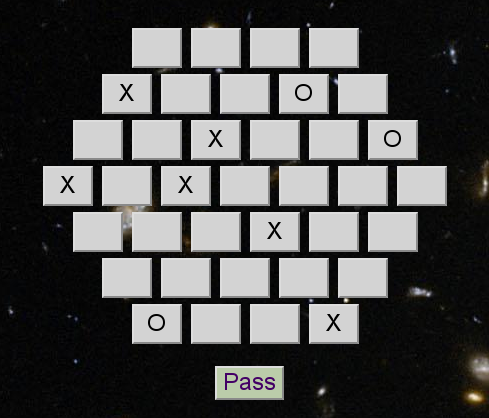
A game designed by Mark Steere. I
might have called it Zug-Zwang-Zwang.
Four-in-a-Row
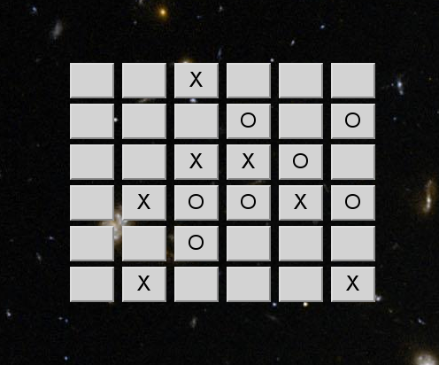
Another classic, in two sizes: 5x5 and 6x6.
Gerrymander
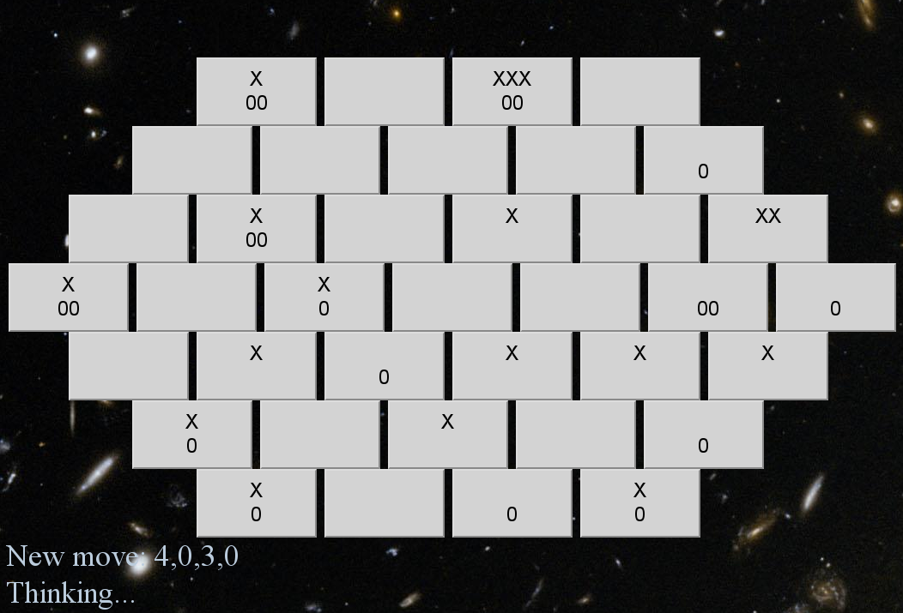
A game inspired by the political
shenanigans of the same name.
Life & Death
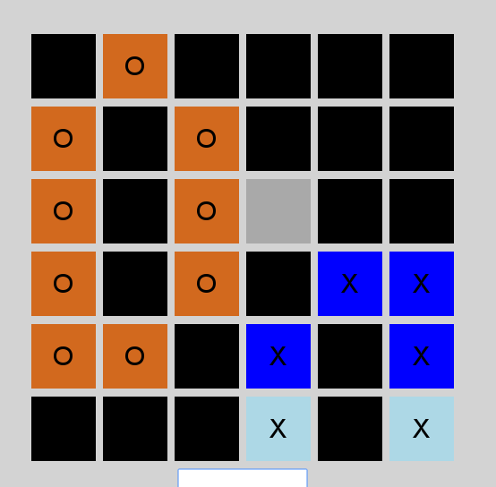
A two person game inspired by John Conway's well known Game of Life.
Number Chess
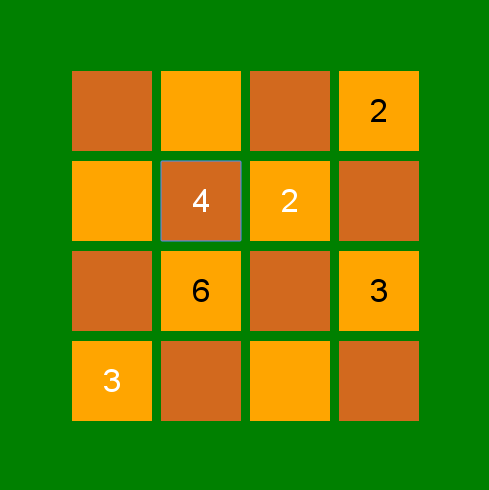
Chess with numbers that move like knights.